Week 11 — Advanced Topics
2026-07-27 → 08-02 · FFT (DC4/5), Graph/Flow applications, RA1 Modular Arithmetic, RA2 RSA, RA3 Bloom Filters
Due this week
| Item | Type | Note |
|---|---|---|
| Quiz 8 | cumulative | covers the whole course |
This week is a grab-bag of four shorter lectures. Pick by sub-topic below.
Watch the lectures (4 parts)
Learning objectives
- Explain how FFT multiplies polynomials in O(nlog n) via roots of unity.
- Reduce real problems (matching, segmentation, selection) to max-flow / min-cut.
- Do fast modular exponentiation and state Fermat's little theorem.
- Walk the RSA key/encrypt/decrypt cycle and its security assumption.
- Quantify a Bloom filter's false-positive rate and its space tradeoff.
Core concepts
FFT — fast polynomial multiplication (11A · DPV §2.6)
Problem. Multiply two degree-n polynomials. The schoolbook convolution of coefficients is O(n2).
Key idea — two representations. A degree-n polynomial is fixed by either its n + 1 coefficients or its values at n + 1 points. Multiplication is O(n) in the point-value representation (just multiply values pointwise). FFT is the fast change of basis between the two, evaluating/interpolating at the 2n-th complex roots of unity ωk = e2πik/2n (chosen because their special structure lets a divide-and-conquer split the work):
$$ \text{coeffs} \xrightarrow{\ \text{FFT}\ } \text{point values} \xrightarrow{\ \times\ } \text{point values} \xrightarrow{\ \text{FFT}^{-1}\ } \text{coeffs}, \qquad O(n\log n). $$
Why nlog n. FFT splits a size-n evaluation into two size-n/2 evaluations (even/odd coefficients) plus O(n) combine: T(n) = 2T(n/2) + O(n) = O(nlog n) by the Master theorem (W2).
Graph / flow applications (11B)
Many problems are max-flow / min-cut in disguise — the same black box from W6–W7:
- Bipartite matching → unit-capacity flow from a super-source to a super-sink; max-flow = max matching.
- Image segmentation → min-cut separating foreground/background pixels.
- Project selection → min-cut trading off project profits vs prerequisite costs.
The skill is modeling: define vertices, edges, capacities, s, t, then call max-flow.
Modular arithmetic & fast exponentiation (11C · DPV §1.1–1.2)
Fast modular exponentiation. Compute an mod N in O(log n) multiplications by repeated squaring — square-and-multiply down the bits of n:
$$ a^n = \begin{cases} (a^{n/2})^2 & n \text{ even},\\ a \cdot (a^{(n-1)/2})^2 & n \text{ odd}. \end{cases} $$
Each multiply is taken mod N to keep numbers small. This is what makes RSA practical.
Fermat's little theorem
For prime p and p ∤ a:
ap − 1 ≡ 1 (mod p).
It underlies primality testing and the correctness of RSA decryption.
RSA (11C · DPV §1.3–1.4)
Keys. Pick primes p, q; let N = pq and ϕ = (p − 1)(q − 1). Choose public exponent e coprime to ϕ; compute private d with
e d ≡ 1 (mod ϕ).
Public key (N, e); private key d.
Encrypt / decrypt. c = me mod N, recover m = cd mod N. Correctness follows from med ≡ m (mod N) (Fermat / CRT). Security rests on the hardness of factoring N = pq: knowing p, q gives ϕ and hence d, but factoring large N is believed hard.
Bloom filters (11D · DPV §1.5)
Probabilistic set membership in tiny space. Use k independent hash functions into an m-bit array; insert by setting all k bits, query by checking all k bits.
- No false negatives — if an item was inserted, its bits are set, so a membership query never wrongly says "absent".
- False positives possible — collisions can set all k bits by accident. With n items:
Pr [false positive] ≈ (1 − e−kn/m)k.
Tune k and m to trade a small error probability for large space savings.
Algorithms
| Tool | Idea | Runtime |
|---|---|---|
| FFT | evaluate at roots of unity → pointwise multiply → interpolate | O(nlog n) |
| Fast mod-exp | square-and-multiply over bits of n | O(log n) mults |
| Flow reduction | model as network, call max-flow | per max-flow (e.g. O(m2n)) |
| Bloom insert/query | set / test k hashed bits | O(k) |
Key theorems & results
- FFT correctness: evaluation at the 2n-th roots of unity is invertible (the inverse FFT is the same algorithm with conjugate roots and a 1/2n scale), so coefficients are recovered exactly.
- Fermat's little theorem: ap − 1 ≡ 1 (mod p) for prime p ∤ a — the engine of RSA correctness.
- Bloom one-sidedness: false-negative rate is exactly 0; only false positives occur.
Worked example (RSA, tiny numbers)
p = 3, q = 11 ⇒ N = 33, ϕ = (2)(10) = 20. Pick e = 3 (coprime to 20); solve 3d ≡ 1 (mod 20) ⇒ d = 7. Encrypt m = 4: c = 43 = 64 ≡ 31 (mod 33). Decrypt: 317 mod 33 = 4 — original message recovered.
Common pitfalls / exam traps
- Forgetting FFT needs ≥ 2n points to represent the product (degree doubles).
- Reducing a problem to flow but mis-setting capacities (matching needs unit capacities).
- Computing an mod N by naive repeated multiplication (O(n)) instead of O(log n) squaring.
- Saying Bloom filters can give false negatives — they cannot; only false positives.
How to answer (HW / exam)
These run lighter than the exam units. FFT → cite O(nlog n) and the eval/multiply/interpolate pipeline. Flow apps → state the network (vertices, edges, capacities, s, t) and reduce to max-flow. RSA → show the modular-arithmetic steps. Bloom → state the false-positive rate and the no-false-negative guarantee.
Go deeper — readings
Comprehensive Notes
Full lecture notes for this week's modules, figures inline. Source: course topic notes.
DC4 — Fast Fourier Transform (Intro)
DC4: FFT-Fast Fourier Transform
What we've seen so far is how to use divide and conquer in a clever way to multiply large integers. So for N bit integers, we were able to multiply and compute their product in time better than O(n2). What we're going to do now is multiply polynomials. To do this, we're going to use the beautiful divide and conquer algorithm known as FFT.
- FFT stands for Fast Fourier Transform.
So here's the set up. We have a pair of polynomials
- A(x) = a0 + a1x + a2x2 + ⋯ + an − 1xn − 1
- B(x) = b0 + b1x + b2x2 + ⋯ + bn − 1xn − 1
The goal is to compute the product polynomial
- C(x) = A(x)B(x)
- which we expect to have the form
- c0 + c1x + c2x2 + ⋯ + c2n − 1x2n − 2
- Since the degree of C of X is at most 2n-2
- where $c_k = a_0 b_k + a_1 b_{k-1} + \cdots + a_k b_0 $
- this is an easily provable result left to the reader
We will use an alternative notation to help simplify the problem, This doesn't, however, change the problem.
- Use vector notation for the polynomial coefficients
- A = (a0, a1, a2,,⋯, an − 1)
- B = (b0, b1, b2,,⋯, bn − 1)
- C = A ⋅ B = (c0, c1, c2,,⋯, c2n − 2)
- the star symbol denotes the convolution
P1: Review-Polynomials & Convolutions¶
Let's do a quick review of polynomial multiplication
- Let A = 1 + 2x + 3x2 and B = 2 − x + 4x2
- Then c = a*b = (2,3,8,5,12)
- since there are k terms for ck this will take O(k) time for ck,
- but it takes a total of O(n2) time for the original A & B
- We want better than O(n2), in fact our goal is O(n log n)
Note. Convolutions are a rather unique type of function with many applications in signal and image processing. I highly recommend googling a bit if you've never encountered this.
Now let's get back to our polynomials.
There are 2 natural ways to express a polynomial
- Coefficients: which we used above A = (a0, a1, a2,,⋯, an − 1)
- Values: at each term, ie A(x1), A(x2), ⋯, A(xn)
Lemma. A polynomial of degree n − 1 is uniquely determined by its values at any n distinct points.
- just think of a simple line. It has degree 1 and it determined by it's values at 2 distinct points
Point 2 above is better for multiplication purposes. What FFT does is switch between the 2 representations.
Key idea. Multiplying polynomials is easy in the values representation — just multiply the values pointwise. FFT's job is to move cheaply between the coefficient and value representations. It may not be obvious why the value approach makes multiplication easier so let's look at an example.
So suppose that we know the polynomial A(x) and B(x) evaluated at the same 2n points, (x1 -> x2n)
- ie given
- A(x1), A(x2), ⋯, A(x2n)
- B(x1), B(x2), ⋯, B(x2n)
- At the same 2n points
- Then we can compute the product polynomial C(x) at these 2n points
by just computing the product of two numbers for each i.
- ie C(xi) = A(xi)B(xi)
- These are just numbers, making Ci just a number
- which take just O(1) to compute for each i
- t/f it takes O(n) total time to compute this product polynomial.
Now why do we take A and B at two n points? Well, C is a polynomial of degree at most 2n-2. So we needed at least 2n minus one points. So two n points suffices.
The summary is that, if we have the value of these polynomials, A(x) and B(x), at n, or two n points, then we compute this product polynomial at the same points in order n total time. So what we're going to do is we're going to use FFT to convert from the coefficients to the values, this is going to take O(n log n) to convert, and then it'll take O(n) total time to compute the product polynomial at these two n points, and then we do FFT to convert back from the values of C(x), at these two n points, back to the coefficients for C(x), and that again will take O(n log n) time.
So let's dive in now to see how we do FFT, which converts from the coefficients to the values.
Again let's re-iterate our terms here
- Given a polonomial of degree n
- A(x) = a0 + a1x + a2x2 + ⋯ + an − 1xn − 1
- we represent this as A = (a0, a1, a2, ⋯, an − 1)
- Goal is to compute: A(x1), A(x2), ⋯, A(x2n)
- for any 2n points that we get to choose
So let's suppose x1, ..., xn
are the opposties of xn + 1, ..., x2n
Then $x_{n+1}=-x_1, \\
x_{n+2}=-x_2,...,x_{2n}=-x_n$
(let call this the ± property)
Observe that for the even terms in A the opposite will have the same sign as they are powers of 2k. But for the odd terms their sign will be different.
After splitting we have
- Aeven = (a0, a2, ⋯, an − 2)
- and Aeven = (a1, a3, ⋯, an − 1)
Which we can put back into a polynomial (using y to help alleviate any confusion)
- $A_{even}(y) = a_0+a_2 y + a_4 y^2 +\cdots+ a_{n-2} x^{(n-2)/2} $
- $A_{odd}(y) = a_1+a_3 y + a_5 y^2\cdots+ a_{n-1} x^{(n-2)/2} $
These are new polynomials! these are not the same as the original A(x) polynomial. However, A(x) can be formed from these. In fact
- $A(x) = A_{even}(x^2) + x A_{odd}(x^2) $
- we multiply the odd terms by x, otherwise we would be off-by-one
- verify this for a polynomial of degree 3
At this point you should be picking up on our divide and conquer approach. We've divided the polynomial and we have yet to conquer.
Now that we know $A(x) = A_{even}(x^2) + x A_{odd}(x^2) $ it's pretty simple to translate A(x) into A(x1), A(x2), ⋯, A(x2n) all we need to do is
- compute at some point i, and use our ± property to compute at n+i
- So $A(x_i) = A_{even}(x_i^2) + x_i A_{odd}(x_i^2) $
- and $A(x_{n+i}) = A(-x_i) = A_{even}(x_i^2) - x_i A_{odd}(x_i^2) $
- that was easy eh?
So now
- given Aeven(y1), ..., Aeven(yn) and Aodd(y1), ..., Aodd(yn)
- for y1 = x12, ..., yn = xn2
- we compute A(x1), A(x2), ⋯, A(x2n)
- in just O(n) time
FFT-Summary
To get A(x) of deg
≤ n − 1 at 2n points x1, ...x2n
of our choosing.
- 1: We define Aeven and Aodd of deg ≤ (n/2) − 1
- 2: We recursively evaluate A(x) at n points using
$A(x) = A_{even}(x^2) + x A_{odd}(x^2) $
- Recall y1 = x12 = xn + 12, ..., yn = xn2 = x2n2
- 3: In O(n) time we get A(x) at points x1, ...x2n
This leads to a runtime of 2T(n) + O(n) = O(nlogn), The astute student will also notice that so far this is very similar to the merge sort algorithm.
All that is left is to prove the ± property holds not only for the initial polynomial but also for each level of recursion. Which may come as a bit of surprise. Consider what the ± prop means
- Initially we choose xn + 1 = −x1, ...
- next we choose y1 = x12, ...
- Which implies that y1 = −y(n/2) + 1, ...
- but then x12 = −x(n/2) + 1
which would mean that the square of x is a negative number ...
- if you're beginning to imagine the root of -1 you're on the right track
- we will need to venture into the world of complex numbers
Let's review complex numbers ...
P2: Review-Complex Numbers
Recall
- z = a + bi is how we define a complex number
- a is said to be the real part
- and bi is said to be the imaginary component
- i here is defined as $\sqrt{-1}$ which of course does not exist in the real plane of number line
You may also recall that when working with complex numbers it is often more convenient to work in the polar co-ordinate system where a point such as (a,b) in the compelx plane is translate to (r,θ) in the polar plane. r describes the points radius or distance from (0,0) and θ describes the angle from the real axis.
The following illustration may be a better explanation
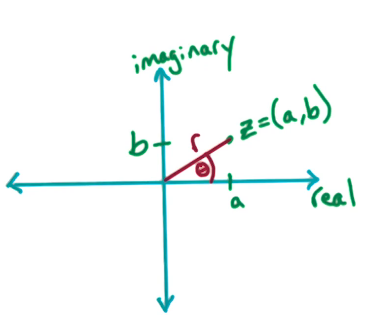
We will state without prrof the following properties
- (a, b) = (rcosθ, rsinθ) This is how we can convert between the two planes
- using Euler's formula
- eiθ = cosθ + isinθ
- we multiply each side by r to get z
- z = r(eiθ) = r(cosθ + isinθ)
Muliplying numbers in Polar
Consider two complex numbers z1, z2
- Multiplication:
- z1 × z2
- = (r1, θ1) × (r2, θ2)
- = (r1r2, θ1 + θ2)
- so far so good right? we've not done anything very unusual
- but now consider −z?
- this is just (r, θ + π)
- -z is just the reflection of z, so we add pi to get this reflection. the radius doesn't change
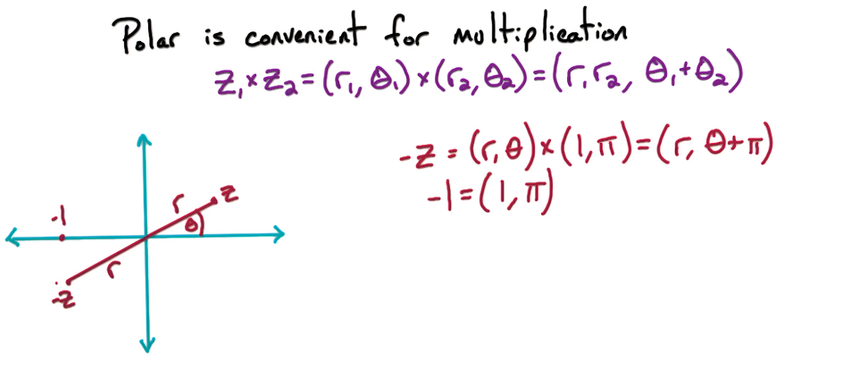
Roots of Unity
For our purpose we will need numbers called the n'th complex roots of unity (unity here means 1)
- n'th complex root examples
- for n=2: the roots are 1, -1
- for n=4: the roots are 1,-1,i,-i
- formally
- the n'th complex roots of unity are the complex numbers z where zn = 1
This can be bit difficult to conceptualize. What it boils down to is that the roots of n'th complex roots of unity are the n'th points on a unit circle in the complex space. Mathematically this means that for z = (r, θ) we have zn = (rn, nθ). rn is always 1 as this is a unit circle. nθ is very simple. Just solve for theta θ = 2πj/n where j is an integer s.t. 0 ≤ j ≤ n. This basically just amounts to dividing the unit circle into n points, evenly spaced of course.
Here is a visualization
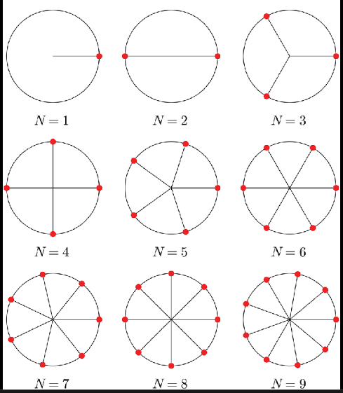
Let's kick it up a notch
- let ωn = (1, 2π/n) which corresponds to j=1
- then ωn2 = (1, 2 ⋅ 2π/n) which corresponds to j=2
- etc etc
- But recall Euler's formula!
- application yields ωn = (1, 2π/n) = e2πi/n
- thus we generalize ωnj = e2πij/n
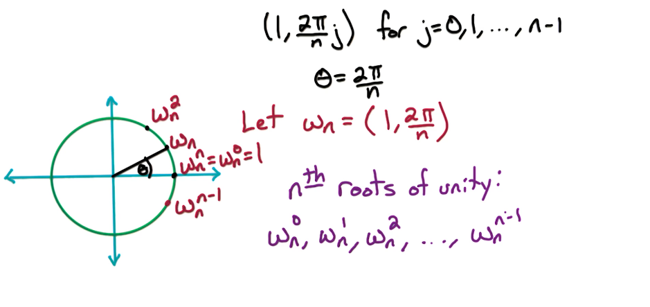
Here's a worked example showing the relationship between ωn8 and ωn16 which is just$ (\omega_n^8)^2$
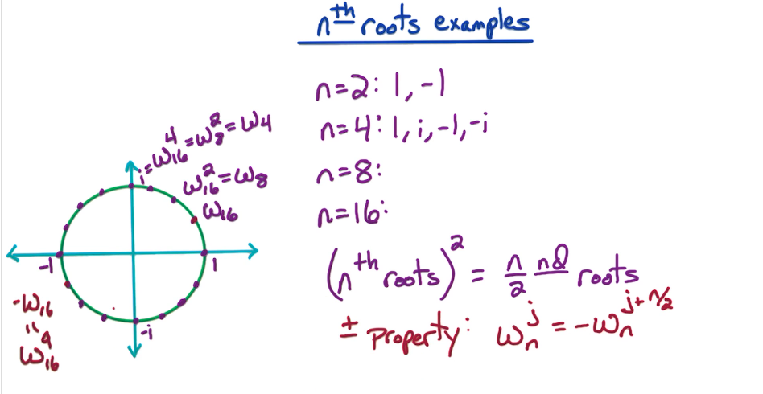
All of this was just to demonstrate two key properties of the n'th roots of unity which we will need for our FFT algo.
Property 1
For an even n: the n'th roots satisfy the ± property.
- The 1st (n/2) n'th roots are the opposite of the last n/2 roots
- ie
- ωn0 = −ωnn/2
- ωn1 = −ωn(n/2) + 1
- ...
- ωn(n/2) − 1 = −ωnn − 1
Property 2
For n a power of 2, n = 2k, the
( n’th roots)2 = (n/2)’nd roots
- $\large (\omega_n^j)^2 = (1,\frac{2\pi}{n}j)^2 = (1,\frac{2\pi}{n/2}j) = \omega_{n/2}^2$
- similarly
- (ωn(n/2) + j)2 = (−ωnj)2 = ωn/2j
Now we are ready to move forward in our FFT algorithm. It should not come as a surprise when we choose the n't roots of unity as our 2n points to evaluate A(x)
Examples-FFT
Q1: What is the sum of the n'th roots of
Unity?
Recall that the n'th roots are defined as ωnj = e2πij/n
- So we take the sum
- $\large \sum_0^{n-1} e^{j(2 \pi i / n)}$ or if you prefer $\large \sum_0^{n-1} \omega_n^j$
- which we can expand
- $\large 1 + \omega_n^1 + \omega_n^2 + \cdots + \omega_n^{n-1}$
- $\large \frac{\omega^n - 1}{\omega - 1}$
- which is just 0 ...
- in case you forgot why ωn is the n'th root of unity meaning ωn − 1 = 0
- in case you're still confused
- the complex roots of the equation zn − 1 = 0, are the roots of unity
- in case you're still confused ... I'm all out of ideas try google?
DC5 — The FFT Algorithm
DC5: FFT-Algorithm
Now that we have all the necassary pieces we can begin to put the puzzle together. So let's recap the problem, then draw out our algorithm
Goal To Evaluate the polynomial A(x) of deg ≤ n − 1 at n points, where n is a power of k
Recall that in order to perform the polynomial multiplication we will need A(x) at 2n points. In order to obtain at two N points instead of N points, we can just pad the polynomial, the coefficients with zeros, so that we view the polynomial as a degree 2n-1 polynomial.
Now what are these n points that we're going to choose? We're going to choose the n'th roots of unity as our end points, which we're going to evaluate the polynomial of A(x) at. Now since n is a power of 2, ie N equals 2k for some positive integer k. Then we know that these n points, the n'th roots of unity, will satisfy the ± property. So the first N over two are opposite of the last N over two. Also recall that the second poperty demonstrated that the square of the n'th roots are the (n/2)'nd roots.
So we'll take the polynomial A(x) and split into Aeven and Aodd. Each with at most degree (n/2) − 1. Then we'll recursively evaluate Aeven and Aodd at the (n'th roots)^2. Which because of property 2 is just the (n/2)nd roots. Evaluation requires 2T(n/2) time
Finally, once we have Aeven and Aodd at the (n/2)nd roots then it will require O(n) time to get A(x) at the n'th roots. Using our handy little formula: A(x) = Aeven(x2) + xAodd
FFT Pseudocode - Version 1
FFT(a,ω):
INPUT: Coefficients a = (a0, a1, ..., an − 1) for polynomial A(x)
- where n is a power of 2
- and ω is a n'th root of unity
OUTPUT: A(ω0), A(ω), A(ω2), ⋯, A(ωn − 1)
If n=1, return A(1)
Let
- a_even = (a0, a2, ..., an − 2)
- a_odd = (a1, a3, ..., an − 1)
(s_0,s2,...,s{n/2-1}) = FFT(a_even,ω2) returns A_even(ω0),A_even(ω2),...,A_even(ωn − 2)
(t_0,t1,...,t{n/2-1}) = FFT(a_odd,ω2) returns A_odd(ω1),A_odd(ω3),...,A_odd(ωn − 2)
for j = 0 -> (n/2)-1:
A(ωj) =
A_even(ω2j) + ωj A_odd(ω2j)
A(ω(n/2) + j
= A(-ωj) =
A_even(ω2j) - ωj A_odd(ω2j) #
notice the subtraction in the second equation
Here's a more compact version
FFT Pseudocode - Version 2
FFT(a,w):
If n=1, return A(1) # Our base case
a_even = $(a_0,a_2,...,a_{n-2})$ # Now the split O(n)
a_odd = $(a_1,a_3,...,a_{n-1})$
s[:] = FFT(a_even,w^2) # T(n/2)
t[:] = FFT(a_odd,w^2) # T(n/2)
for j = 0 -> (n/2)-1: # O(n)
r[j] = s[j] + w^j t[j]
r[(n/2)+j] = s[j] - w^j t[j]
return r[:]Total Run Time: 2*T(n/2)+O(n) = solves to O(n log n)
Example
Suppose a=(1,0,0,0) are the coefficients of a polynomial.
What is the FFT?
You don't need to go through the entire fft algorithm. Just compute
A(ωni)
- we take n=4 since we have 4 co-efficients, then
- A(ω40) = A(1) = 1(1)0 + 0(1)1 + 0(1)2 + 0(1)3 = 1
- A(ω41) = A(i) = 1(i)0 + 0(i)1 + 0(i)2 + 0(i)3 = 1
- A(ω42) = A(−1) = 1(−1)0 + 0(−1)1 + 0(−1)2 + 0(−1)3 = 1
- A(ω43) = A(−i) = 1(−i)0 + 0(−i)1 + 0(−i)2 + 0(−i)3 = 1
You can even run the inverse FFT to get
- 1/4 * (1,1,1,1)
FFT Polynomial Multiplication
Now you may recall way back when we began this section our problem was to multiply two n-degree polyomials a=(a_0,...,a_n-1) and b=(b_0,...,b_n-1) corresponding to the coefficients for a pair of polynomials A(x) and B(x).
The output of this multiplication is c=(c_0,...,c_2n-2) the coefficients for the polynomial C(x)=A(x)B(x). Equivalently C is a convolution of A and B.
In order to multiply these polynomials A of X and B of X, we want to convert from the coefficients A and B to the values of these polynomials A of X and B of X.
How many points do we need these polynomials at? Well since C is of degree 2n-2, we want C(x) at at least two and 2n-1 points. In order to maintain that n is a power of 2, we'll evaluate A of X and B of X at two endpoints. In order to do that, we'll run FFT. We will consider A(x) and B(x) as polynomials of degree 2n minus one, by padding them with zeros.
So we run FFT with this vector a and the 2n'th root of unity. And this is going to give us a polynomial A(x) at the two nth root unity.
- (r0, r1, ..., r2n − 1) = FFT(a, ω2n)
Similarly for B(x)
- (s0, s1, ..., s2n − 1) = FFT(b, ω2n)
Now we can compute C(x) at the two nth roots of unity
- for j = 0 -> 2n-1:
- $t_j = r_j \times s_j $
Now that we have C(x) at the 2n'th roots of unity we need to work back to get the co-efficients. ie we need to go from the values back to the co-efficients. Whereas in previous cases we went from the co-efficients to the values, which is the FFT call. So how do we do this? well turns out there is an inverse to the FFT that does the job for us. The inverse or reverse FFT is very similar to the original FFT. But it requires a bit more math to understand why
Inverse FFT
So before we explore inverse FFT, it will be useful to explore the linear algebraic view of FFT. In this way, we can look at FFT as multiplication of matrices and vectors. So consider a point x_j, The polynomial A of X evaluated at the point x_j equals a_0 plus a_1 x_j plus a_2 x_j squared and so on. The last term is a_n-1 x_j to the n-1. Notice that this quantity can be rewritten as the inner product of two vectors.
For point xj:
$A(x_j) = a_0 + a_1 x_j + a_2 x_j^2 + \cdots + a_{n-1} x_j^{n-1} $ = (1, xj, xj2, ..., xjn − 1) × (a0, a1, a2, ..., an − 1)
So for n points it gets rather tedious to write this all out so we
switch to matrix notation:
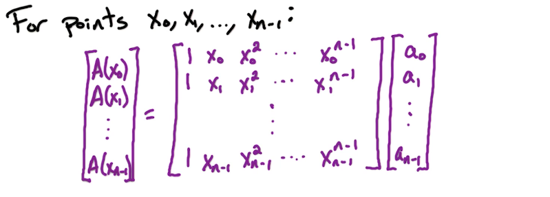
The above is just for an arbitrary x. Watch what happens when we apply our evaluation using the n roots of unity, ie take xj = ωnj
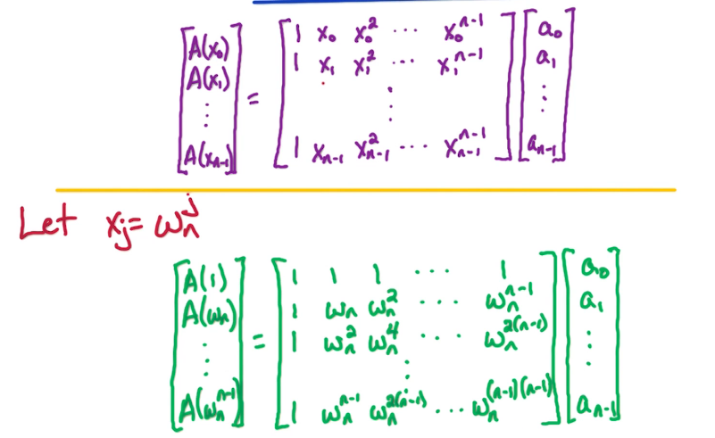
Notice the symmetry. Also notice that the central matrix is just powers of ωn.
Let's simplify this a bit more. Call the middle matrix Mn(ωn),
the final vector a and the vector at the left is A
Then we can write this as
A = Mn(ωn)a
Which is exactly what FFT(a, ωn) returns/computes. So what do you the inverse fft is?
$InvFFT(a,\omega_n) \to a = M_n^{-1}(\omega_n) A $
So what is this M inverse? well as you may have guessed the answer lies in yet another theorem!
Lemma:
$M_n^{-1}(\omega_n) = \frac{1}{n} M_n(\omega_n^{-1}) = \frac{1}{n} M_n(\omega_n^{n-1})$recall that ωn−1 is the number that satifies the result ωn × ωn−1 = 1
which you may recall is also ωn × ωnn − 1 = ωnn = ωn0 = 1
So Now let's take our original result
- $a = M_n^{-1}(\omega_n) A $
- $n a = M_n^{-1}(\omega_n^{n-1}) A $ (apply the lemma and multiply each side by n)
- Now you should be able to see that ... this is just an FFT computation
- the inverse has disappeared
- thus $a = \frac{1}{n} FFT(A,\omega_n^{n-1})$
So what is all this gibberish saying? Inverse FFT is FFT computed in the reverse order. It's like an inverted clock
Consider: For an even b, what is 1 + ωn + ωn2 + ⋯ + ωnn − 1
There's two ways to think about it.
The first is geometrically, recall that each successive exponent simly advances the point along a unit circle. Since we have n points we have effectively traversed the circle and ended where we started 0. which is ωn0 = 1
The other approach is to apply the ± property. Recall that for each j ωnj = −ωn(n/2) + j
We can actually generalize this even further
Claim: for any n'th root of unity ω where ω ≠ 1, 0 = 1 + ωn + ωn2 + ⋯ + ωnn − 1
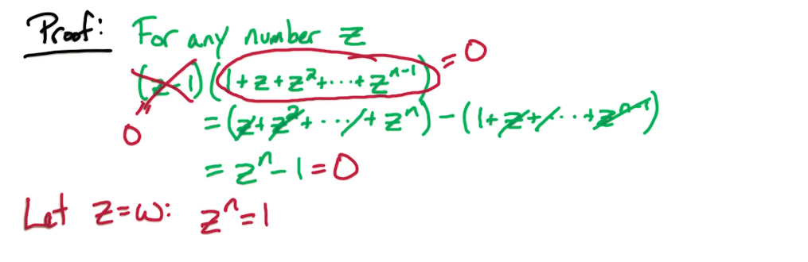
Now let's go through a proof of the lemma.
Recall that we need to show $M_n(\omega_n)^{-1} = \frac{1}{n}
M_n(\omega_n^{-1})$
If true then it would mean that $\frac{1}{n} M_n(\omega_n^{-1}) M_n(\omega_n) = I$ where I is the identity matrix (1's along the diagonal and 0's otherwise)
So we will demonstrate that Mn(ωn−1)Mn(ωn) results in a matrix with n's along the diagonal and is 0 in all other entries.
for entries (k,k), we will work out the dot product of the k'th row and k'th column
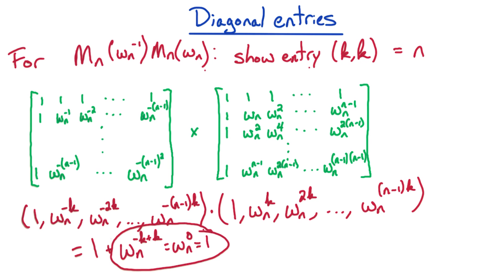
for entries (k,j), where k ≠ j, again we will work out the dot product of the k'th row and j'th column
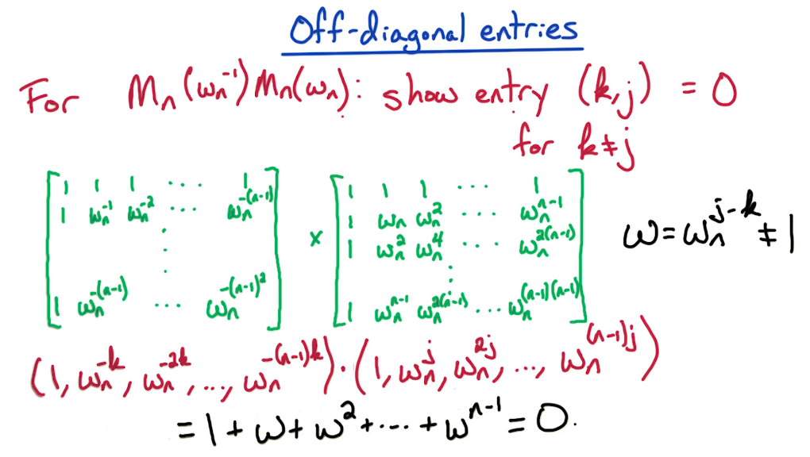
Finally we can return to our polynomial multiplication algorithm
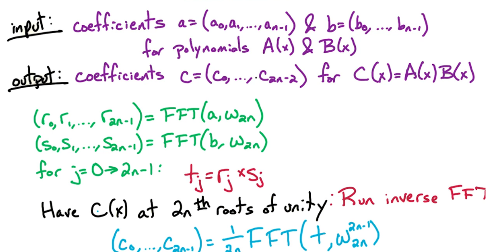
Finally the pain is over!!
Ex 1
Problem 1 (Integer multiplication using FFT)
(a) Given an n−bit integer number a = a[n−1]a[n−2] . . . a0 define a polynomial A(x) satisfying A(2) = a.
(b) Given two n−bit integers a and b, give an algorithm to multiply them in O(n log(n)) time. Use
the FFT algorithm from class as a black-box (i.e. don’t rewrite the code, just say run FFT on
...). Explain your algorithm in words and analyze its running time. (Think/investigate why
this is not enough to claim a fast multiplication algorithm).Part a
Recall that a polynomial is simply an equation of the form $\large \sum_0^{n-1} a_i x^i$. So this is
done by the definition
Part b
Obviously we will want to make use of the FFT algo
Step 1
Formulate the n-bit integer inputs as per the definition in part a
Step 2
- Choose an N for the roots of unity,
- N must be a power of 2
- and N ≥ 2n where n is the number of bits
- define A = (a,padding to N)
- ie a0, a1, ⋯, an − 1, 0, 0, ...
- do the same for B
Step 3
Run the FFT using ωn
- A' = FFT(A,ωn)
- B' = FFT(B,ωn)
Step 4
Multiply A' and B' to get C'
- C' = A' x B'
- C[i] = A[i] x B[i] for 1 ≤ i ≤ N
Step 5
Run FFT on inverse roots of unity and apply scaling
- C = FFT(C',ωn−1) * 1/N
Step 6
- Compute C(2) to get back binary integer
Correctness
By converting the binary numbers we can make use of the FFT algorithm to
multiply them.
Runtime
- Takes T(n)
- Takes T(2n)
- Takes T(2n log n) recall that FFT is O(n log n)
- T(n)
- O(n log n)
- T(n)
Dominant term is O(n log n)
Ex 2
Consider A = x + 1 and B = x2 + 1, Find C = A × B
FFT Summary
FFT is a transformation algorithm
- it converts from coefficients to values, when ω2n is used
- it converts from values to coefficients, when ω2n−1 is used (but don't forget to scale! by 1/2n )
FFT requires input vector of length n = 2k
- may use padding to ensure this is always true
FFT results are with respect to the roots of unity
- it's return values must always undergo some sort of transformation back into the real number system
- this is generally done using the inverse fft
Inverse FFT is just FFT evaluated at the inverse roots of unity ω2n−1
- ω2n−1 go clockwise
- ω2n−1 are the mirrored/flipped values of ω2n
RA1 — Modular Arithmetic
RA1: Modular Arithmetic
The mathematics of the RSA cryptosystem are very beautiful and they're fairly simple once you have the right mathematical background. So we're going to start with a short primer on the mathematical topics that we need.
The relevant topic that we need is Modular Arithmetic. Then one key concept that we need are multiplicative inverses, and what they mean in modular arithmetic. And then we're gonna look at Euclid's GCD algorithm, greatest common divisor, which is gonna be used in the RSA cryptosystem. Next we're going to learn about Fermat's Little Theorem and it's the key tool in the design of the RSA algorithm. So at this point we'll be able to detail the RSA algorithm. Finally, we'll look at Primality testing, given a number, can we test whether the number is prime or not, or composite?
Once we see how to do that using Fermat's Little Theorem, then we're going to be able to generate random primes. Generating random primes is a key component in the RSA algorithm. So once we complete that, we'll have completed our discussion of the RSA algorithm. Now let's go ahead and dive into the algorithms related to the RSA.
Lets look at the context of the RSA algorithm. In cryptography, we're going to work with N-bit numbers X, Y and N. For example, the number of bits in these numbers is going to be huge. Think of the number of bits as 1024 or 2048. It's a huge number of bits. So normally, we thought of our arithmetic operations as built into hardware, but that usually restricts the attention to 64 bits or so. But here we're talking about 1000 or 2000 bits. So we have to go back and review how long does it take for basic arithmetic operations.
Now let's take a look at modular arithmetic. This is the basic mathematics that underlies the RSA algorithm and we're going to see a lot of beautiful mathematics along the way.
Let's look at a simple example,
- for an integer x, x mod 2 = least significant bit of x
- What does the least significant bit of X tell you?
- It tells you whether X is odd or even.
- x mod 2 = 1 if X is odd
- x mod 2 = 0 if X is even
Another way of looking at this least significant bit of X, we can take X divided by two. If it's even then the remainder is going to be zero because it's a multiple of two, and if it's odd, then the remainder when X divided by two is going to be one.
Now let's look at X mod N where N >= 1.
- Recall x mod 2 is the remainder when x is divided by two
- So X mod N is going to be the remainder when we divide X by N
Finally let's look at some important notation for modular arithmetic.
Suppose we have two numbers X and Y, and we look at these two numbers modular N, and suppose that they're same mod N, how do we denote that? Well, they're not equal. The two numbers are not equal, but they're congruent in this, or they're equivalent in this world modular N.
So how do we denote that equivalence or congruence? So the standard indication is three lines instead of two lines.
- x ≡ y mod N
- This notation means that X and Y are congruent modular N,
- which means that X/N and Y/N have the same remainder
Example
mod 3 has 3 equivalence classes:
0, 3, 6, 9, etc etc but we can also use negatives -3, -6, -9
1, 4, 7,10, etc etc but also -2,-5,-8
2, 5, 8,11, etc etc but also -1,-4,-7Handy Fact
if x ≡ y mod N &
a ≡ b mod N
then x + a ≡ y + b mod N
Similarly (xa) ≡ (yb) mod N
Example: 321 × 17 ≡ 1 × 17 ≡ 17 mod 320
Modular Exponentiation
Given n-bit numbers x,y,N, our goal is to compute xy mod N
( Assume that these number are very large, HUGE. )
Naive/Brute force approach
Compute
- x mod N = a1
- x2 ≡ a1x mod N = a2
- x3 ≡ a2x mod N = a3
- ⋯
- xy ≡ ay − 1x mod N = an
Each of these lines is roughly O(n^2), O(n) to multiply a & x and O(n) to take the mod N. The number of lines or rounds is roughly y ≤ 2n. For a total run time of roughly O(n22n)
Consider 75mod23?
- 72 ≡ 3 mod 23
- 73 ≡ 3(7) = 21 mod 23
- 74 ≡ 21(7) = 9 mod 23
- 75 ≡ 9(7) = 17 mod 23
Although this is a bit better it's less than ideal. Here's a third approach that is a bit fast
Repeated Squaring Method
Compute
- x mod N = a1
- x2 ≡ a12 mod N = a2
- x4 ≡ a22 mod N = a4
- ⋯
- xy ≡ ay − 1x mod N = an
Consider our example from before 725mod23
- 72 ≡ 3 mod 23
- 74 ≡ 32 = 9 mod 23
- 78 ≡ 92 = 81 ≡ 12 mod 23
- 716 ≡ 122 ≡ 144 ≡ 6 mod 23
- 25 in binary is 11001
Thus
- 725 ≡ 716 × 78 × 7 ≡ 6 × 12 × 7 ≡ 72 × 7 ≡ 3 × 7 ≡ 21 mod 23
- Final answer 21
ModExp Algorithm
First we state a key observation which should be trivial
- for even y, xy = (xy/2)2
- for odd y, xy = x(x⌊y/2⌋)2 ( the leading x is to make up for the term that is dropped by the floor )
ModExp(x,y,N):
Input : n-bit integers x,y,N > 0
Out : x^y mod N
if y=0, return 1
z=ModExp(x, floor(y/2),N)
if y even
then return (z^2 mod N)
else return (xz^2 mod N)Multiplicative Inverses
What's the inverse of (1/z) mod N ?
Definition
x is the multiplicative inverse of z mod N
- if xz ≡ 1modN
of course if follows that
- x ≡ z−1modN
- z ≡ x−1modN
Consider, for N=14
- x=1: then 1−1 ≡ 1modN
- x=2: then 2−1 ≡ ?modN doesn't exist
- x=3: then 3−1 ≡ 5modN
- x=4: then 4−1 ≡ ?modN doesn't exist
- x=5: same as above for 3
- x=6,7,8 don't exist
- x=9: then 11−1 ≡ 11modN
- x=13: then 13−1 ≡ 13modN
You may or may not have picked up on a pattern here. It turns out when there is a common divisor then there will not be an inverse. Otherwise the inverse exists.
Theorem. x−1 mod N exists iff gcd (x, N) = 1; if they have a gcd > 1 then they must have an inverse.
- This, gcd(x,N) = 1, is often termed relatively prime
Suppose x−1 mod N exists, then how many can there be?
For ex consider x=3,N=11 then 3−1 ≡ 4 mod N. How many inverses can there be?
We will prove there can be only one, using contradition. Suppose there are two inverses, ie z ≡ x−1 mod N and y ≡ x−1 mod N and that z ≢ y mod N, which also means 1 ≤ y ≠ z ≤ N. Since z is an inverse of x mod N then we have that xz ≡ 1 mod N similarly xy ≡ 1 mod N. But then we can equate the two to get xz ≡ xy ≡ 1 mod N. so xz ≡ xy. Now multiplying each side by x−1 yields z ≡ y. Which contradicts our assumption at the start z ≢ y mod N. I'll spare you the QED, but that's all there is to it.
NonExistence of Multiplicative Inverses
Let's now consider the case when the inverse does not exist. Recall our
earlier theorem that x−1modN
exists iff gcd(x,N) = 1, meaning they are relatively prime. Of course
this means that when gcd(x,N) > 1 then the inverse must not
exist.
To build some intuition of the upcoming proof, let's consider a simple case where x & N are even numbers. furthermore, let z ≡ x−1 mod N and thus xz ≡ 1modN. This would imply that xz = N+1, or 2N+1 or 3N+1 or ... etc etc ... qN+1. But xz must be an even number. whereas qN+1 must be an odd number no matter the choice of q. Hence we have contradiction our initial assumption that x & N are even numbers.
We will now proceed to prove the existence of x−1 mod N by finding it.
Euclid's Rule
Consider the integers x & y with x ≥ y > 0, then gcd(x,y) = gcd(x mod y, y). Let's consider why this must be true. Note that gcd(x,y)=gcd(x-yk,y) for some integer k is equivalent to our earlier statement gcd(x mod y, y). Since the mod function acts like a repeated subtraction. It will now suffice to demonstate the correctness of our second statement. To do this we will search for a divisor common to x,y, & x-y.
- suppose d divides x & y on the left, then d divides y on the right and x-y as it divides each term
- suppose d divides x-y & y on the right, then it follows that d must divide both x and y
- thus one these common divisors must be the greatest
We will now use this to develop an algorithm
Euclids Algo
Euclid(x,y)
Input : Integers x,y where x >= y >= 0
Output : gcd(x,y)
if y=0 return x
else return (Euclid(y,x mod y))
# this is not a typo
# we flip the parameters to ensure x >= y >= 0The base case may look a bit weird. Let's consider the base case gcd(x,0) which we got to by taking some multiple of x with x, ie gcd(kx,x). kx mod x is of course 0 and that is passed to the Euclid call. Furthermore, the gcd(kx,x) is x.
Runtime
Taking the mod of an n-bit number requires O(n2). How many
calls will there be? In general if x ≥ y then x mod y < x/2.
This means our algo will run for at most 2n rounds.
Our final runtime will t/f be O(n3)
Extended Euclid
Extended Euclid Algo
Computing Inverses
This is an extended version of euclid's algorithm. This version however
will return and extra two parameters α and β.
Consider
- if gcd(x,N) =1 then x−1 mod N exists
- t/f d = 1 = xα + Nβ
- t/f 1 ≡ xα + Nβ mod N
- but Nβ mod N is just 0 so the last term is 0
- t/f 1 ≡ xα mod N
- which means α = x−1
- thus x−1 ≡ α mod N
Extended algorithm
extEuclid(x,y)
input: integers x,y where x >= y >= 0
output: integers d,alpha,beta
where d = gcd(x,y)
and d = x*alpha and y*beta
Input : Integers x,y where x >= y >= 0
Output : gcd(x,y)
if y=0 return(x,1,0)
d,a',b' = extEuclid(y,x mod y)
return(d,b',a'-b'*floor(x/y))Runtime is O(n2) per round, with up to 2n rounds similar to before. Hence the runtime is O(n3).
Example
Q: Compute 7−1 mod 360 A: Run Ext−Euclid(360,7)
Let's first look at (x,y)(x,y) in the recursive subproblems.
- They are (360,7) → (7,3) → (3,1) → (1,0)
- (Note, these are the same sequence of subproblems as encountered in Euclid's GCD algorithm.)
Now let's look at the pair (α,β) returned for these inputs.
- For the base case (x,y) = (1,0) we have: (α,β) = (1,0)
- Next, for (x,y) = (3,1) we have: (α,β) = (0,1)
- Then for (x,y) = (7,3) we have: (α,β) = (1,−2)
- Finally, for (x,y) = (360,7) we have: (α,β) = (−2,103)
Therefore, 7−1 ≡ 103 mod 360
Note, we also get that:
- 360−1 ≡ −2 mod 7
Simplifying, we have:
- 360 ≡ 3 mod 7 and −2 ≡ 5
Therefore,
- 3−1 ≡ 5 mod 7
Finally we see
- Answer: 103
Summary
- Use Euclid to find gcd(x,N)
- Use extEuclid to compute x−1 mod N
RA2 — RSA Cryptosystem
RA2: RSA Cryptosystem
Before we dive into the RSA cryptosystem, we're going to dive into the mathematical concept which is the basis for the whole cryptosystem.
Fermat's little theorem
If p is prime then for every 1 ≤ z ≤ p we have zp − 1 ≡ 1 mod p
- Note that 1 ≤ z ≤ p − 1 is equivalent being relatively prime ie gcd(z,p) = 1
This is rather easy result to conceptualize. p is prime, means it has no factors. so the only common factors are 1 and p. Another way to think of this is a small example. Let z=2 and say p=7 which is prime. then zp − 1 = 26 = 64 mod this by 7 to get 1.
This is the basis of the RSA algorithm, as well as the basis of a primality testing algorithm. If given a number x how can we quickly determine if it's prime. We will go through the proof of fermat's little theorem. Which also makes some interesting observations.
Proof: Fermat's little theorem
Let's begin by defining a set S={1,2,3,...,p-1} which is the elements
between 1, and p-1.
Let's also look at another set S' which is z*S mod p, ie S'={1*z mod p,
2*z mod p,...,(p-1)*z mod p}
Ex for p=7, z=4, then S={1,2,3,4,5,6} and S'={4,1,5,2,6,3}
If you stare at S' long enough you may notice something rather amusing.
It's a permutation of S. It's the exact same elements with a different
ordering. So in fact S'=S. This is an example and not a rigorous proof,
but since we all love proofs so much let's not skip this one.
S=S'
Proof
Let S={1,2,...,p-1} and S'={1*z mod p,2*z mod p,...,(p-1)*z mod p}. We
will show that the elements of S' are distinct, non-zero, and that there
are p-1 of them, |S'|=(p-1).
To see that there are (p-1) elements is straight forward as each element in S has a corresponding mapping to S'. To see that they are distinct suppose that for some i,j where i ≠ j, the elements in S' are the same. This means that iz ≡ jzmodp. So we multiply each side by the inverse of z, z−1. This yields i ≡ j mod p which contradicts our assumption that i and j are not equal. How to we know z−1 exists? well p is prime so therefore any number between 1 and p-1 must be relatively prime to it. And of course z must be a number between 1 and p so it must be in S, and it must have a prime.
All that is left to demonstrate that they are all non-zero. Again we proceed by contradition. Assume that there is a zero. then for some i, iz ≡ 0 mod p, again we multiply each side by z−1. This yields i ≡ 0 mod p. Consider what this means? since i is the index of some element in S, i=0 would mean the 0'th index. But the set begins at 1. Hence a contradiction.
Now back to our originally scheduled proof (Fermat's little theorem)
Recall that we need to show that zp − 1 ≡ 1 mod p. Knowing that S=S' will help us to demonstrate this. Now consider multiplying the elements of S together ie 1 × 2 × 3 × ⋯ × (p − 1). Similarly for S' we get ie 1 × z × 2 × z × 3 × z × ⋯ × z × (p − 1) mod p. Let's see if these are equal! Multiplying the elements of S together yields (p-1)!, Multiplying the elements of S' together yields, $(p-1)! z^{p-1} \\ mod \\ p$. Now we need to cancel out the (p-1)!, if your guessing we need an inverse you'd be correct. But recall that p is prime, therefore every number between 1 and p-1 must have an inverse, so the inverse of p-1 is just the factorial of the inverses 1−1 × 2−1 × 3−1 × ⋯ × (p − 1)−1. Now mutiply each side by (p − 1)!−1 and you'll find that $1 \equiv z^{p-1} \\ mod \\ p$ .... well well well this is exactly what we wanted to prove is it not?
Euler's Theorem
Is a more general form of fermat's theorem.
For any N,z where gcd(z,N) = 1 then zϕ(N) ≡ 1 mod N
Where we define ϕ(N),
Euler's Totient function, as
- all integers between 1 & N that are relatively prime to N.
- equivalently it is the cardinality |{$x : 1 \le x \le N, \ gcd(x,N)=1 $}|
Consider what {$x : 1 \le x \le N, \ gcd(x,N)=1 $} means. if N=p prime then by fermat's theorem we could say that all numbers between 1 and p-1 and relatively prime to p. Thus for p prime ϕ(p) = p − 1, pretty simple right? Furthermore if ϕ(p) = p − 1 is virtually the same statement as fermat.
What if N=pq, for primes p and q, then what is ϕ(N)? Well, well, well, lemme tell ya, it's just (p-1)(q-1).
Conceptually
- for the numbers 1,2,3, ... pq
- we have p, 2p, 3p, ... qp: q multiples of p
- sim we have q, 2q, 3q, ... , pq: p multiples of q
- this is pq - q - p + 1 (we add back one because the last term in each is the same)
- this simplifies to (p-1)(q-1)
if we put this result back into Euler's theorem we get the basis of
the RSA algorithm
$$\large Z^{(p-1)(q-1)} \equiv 1 \mod
pq$$
Which allows us to use (p-1) & (q-1) to generate an encryption and decryption key. Let's use an example to build our intuition of RSA.
Suppose we take b,c where bc ≡ 1 mod p − 1, meaning b & c are inverses to each other in modulo p-1, or more simply bc = 1 + k(p-1) for some integer k.
Consider zbc, we can work this out as follows zbc ≡ z ⋅ ((zp − 1)k ≡ z ⋅ 1 mod p .... pretty interesting right? we got back the number z despite raising it to the power of bc. This is exactly what the RSA uses. take a message and encode it to form your z, then raise it to the power of b, then it will take someone with the power of q to raise yet again. The result will be the original message z. There is still one small weakness we want to get rid of. In the above formulation p is known, so if they know p then they certainly know p-1. We will move to conceal p by using Euler's theorem.
To use Euler's theorem, we choose primes p & q, and let N=pq. Find d,e that are inverses to each other in mod (p-1)(q-1). ie de ≡ 1 mod (p − 1)(q − 1). Then zde ≡ z × (z(p − 1)(q − 1))k ≡ z mod N. Now we can send a message encrpted with e along with N. Only the receiver who knows d and thus q will be able to decode it back to z. Even if someone knows e and N they still be unable to decode without d.
RSA: Cryptography
Setting
There are 3 people: Alice the sender, Bob the reciever, and Eve the
aptly named evesdropper. Alice takes her message m and encrypts then
sends it, e(m) is the message she sends. Bob receives e(m) and decrypts
it using his decryption function d(), so he gets the message m =
d(e(m)). This is what is often called a public-key cryptosystem.
Everyone can see e(m). Furthermore Bob will give everyone the keys to
send him a message. He publishes the private key N and e. Now anyone can
use these to encrypt their messages. What bob keeps safeguarded is his
private key d, which is the inverse of e in modulo (p-1)(q-1)
Here's a sketch of the process
- RSA Protocol - Reciever - Bob
- Bob needs to pick 2 n-bit random primes p & q
- to do this generate an n-bit sequence of random 0s and 1s
- then test it to ensure it's prime (primality test we will look at soon)
- Bob choose e relatively prime to (p-1)(q-1)
- Generally these are small so that others can encrypt easily, ie e=3,5,7, or your favourite prime number
- he also needs to ensure this e is relatively prime so he runs Euclid's extended algorithm
- Now Bob has N = pq
- Now bob publishes his public key N & e
- and can compute his private key
- which is the d that satifies d ≡ e−1 mod (p − 1)(q − 1)
- RSA Protocol - Sender - Alice
- Looks up/locates Bob public key (N,e)
- She encodes her message y = me mod N
- If she took this course she would use the fast modular exponentiation algorithm
- finally she sends her message y
- RSA Protocol - Reciever - Bob
- Bob recieves the message y and gets to work
- Decrypts: computes yd mod N = m
Recall. for N = pq:
- d ≡ e−1 mod (p − 1)(q − 1)
- ⟹ de = 1 + k(p − 1)(q − 1)
- $y^d \equiv (m^e)^d $
- ≡ med
- ≡ m × (m(p − 1)(q − 1))k = m × 1
- ≡ m mod N
This is the whole RSA random algorithm. What remains is to look at how to create and test random prime numbers. but first let's look at some possible pitfalls.
Issue 1
Suppose m and N are not relatively prime, ie gcd(m,N) > 1, where
N=pq, p & q prime. This would imply that the gcd of m and N is
either p or q so let's suppose it's p, thus gcd(m,N) = p. Let's think of
how this will affect the RSA algorithm. According to our RSA algo we
would expect (me)d ≡ m mod N
by the Chinese Remainder Theorem (CRT) this will hold true for gcd(m,N)
> 1, (where as Euler's theorem expects gcd(m,N)=1). But there is a
problem here that is not so obvious. if we look at the encrypted message
y = me mod N,
you may observe that all of these are divisable by p. Since gcd(m,N) =
p, then it follows that gcd(y,N) = p also. Thus the encrypted message is
breakable. The moral of the story is that finding two primes is not
always sufficient, if they're not relatively prime your RSA
implementation can break down
Issue 2
m shouldn't be too large, in particular we want m < N. In general
messages can be a large string text, so we first convert it into a
number, this can be done by
- take the binary representation of the text, this will result in an even larger message length,
- in this scenario we will want $m \< 2^n$, which is segments of length 2n this is little n
- where we constrain n to we find p and q such that N ≥ 2n
- which put together implies that m < N as needed
m also shouldn't be too small. Suppose for example if we take e=3 and $m^3 \< N$
- then me mod N is just me.
- Being less than N means that modding it won't have any effect
- meaning the encypted message is just y3
- which can be easily decrypted by taking the cubed root y1/3
One way to avoid the second issue is to choose some random number r, then look at m plus r, m+r, or look at m exclusive or r, m⨁r. This effectively pads the message. If our padded message is sufficiently large, then we send both the padded message and r.
Suppose we want to send the same message m to 3 different people using the same e=3? Each person may have a different public key: Person 1 (N1, 3); Person 2 (N2, 3); Person 3 (N3, 3). When we encrypt the same message for each person we would end up with 3 encrypted messages, say y1, y2, y3. It turns out that if someone possesses all three encrypted messages then they should be able to decrypt m from thing. This is a consequence of the Chinese remainder theorem and is left as an exercise.
Summary
Fermat's Little Theorem For primes p & z, with
gcd(z,p)=1, zp − 1 ≡ 1 mod p
Euler's Theorem For primes p & q, let N=pq. For z
where gcd(z,N)=1 z(p − 1)(q − 1) ≡ 1 mod p
RSA Algorithm
- Choose primes p & q, and let N=pq
- Find e where gcd(e,(p-1)(q-1))=1
- let d ≡ e−1 mod (p − 1)(q − 1) use Extended Euclid algo - KEEP PRIVATE
- Publish public key (N,e)
- Encrypt message m: y ≡ me mod N
- Decrypt y, m ≡ yd mod N, to get back the message m - use fast modular exponentiation
Example
Consider p=13, q=31
What is the smallest e?
- This is basically asking for the smallest relatively prime number
- (p-1)(q-1) = 360, which is divisable by 2,3,5 it is not divisible by 7 so we choose 7 as the lowest relatively prime
What is the public key (N,e)?
- N=pq=403, and e=7 from last question
- thus (N,e) = (403,7)
What is d?
For this we use the extended euclidean algorithm
- (p-1)(q-1) = 360, and e = 7
# to find d =e^-1 mod (p-1)(q-1)
# to compute this we need to find the inverse of e in mod 360
# ie solve x = e^-1 mod 360
# Begin by finding the gcd(360,7)
360 = 7*(51) + 3 #1
7 = 3*(2) + 1 #2 we've gotten to 1 so at least we know the gcd exists
# now the Extended portion of the algorithm
# using the lines above but working from bottom - upwards
1 = 7 - 3*2 # last line from gcd
= 7 - 2*(360 - 7*51) # sub 2nd last line into last line
= 7 + 2*7*51 - 2*360 # simplification steps
= 7 + 2*7*51 # mod out the 360
= 7 + 7*102
= 7*(1+102)
= 7*103
t/f (7*103 = 1 mod 360) so 103 is the inverse of 7
t/f (d = 103 mod 360 = 103)Primality Testing
We want to choose a random pair of prime numbers p & q. let r be a random n-bit number. To do this generate a random string of integers equal to 0/1. This of course is not necasarily prime, it's just random number. So we will check it by running a primality test. If it is prime we are confident it is also a random prime. otherwise we repeat the process to generate another random number. The run time of this can be tricky as it is difficult to predict when a random number will be prime.
Density of the Primes It turns out that prime numbers are dense. The probability of a random number being a prime number is $\approx \frac{1}{n}$
Fermat's test
Recall: Fermat's theorem: If r is prime then for all z in {1,2,...,r-1}
we have that zr − 1 ≡ 1 mod r.
This will form the basis of our primality test. But first let's also
consider the non-prime numbers, ie composite, that we are bound to run
into. These are simply the numbers which are not relatively prime, ie
zr − 1 ≢ 1 mod r.
In a humourous stroke we will call such a z, that proves r is composite,
Fermat's witness. Does every composite r have a Fermat
witness? Yes, in fact they do. They always have at least 1, and may even
have more. These are much easier to find.
Fermat Witness
Define the Fermat witness for r as the number z such that 1 ≤ z ≤ r − 1 and zr − 1 ≢ 1 mod r
Proof: Every Composite r has at least 1 fermat
witness
Since r is composite then it must have at least 2 divisors. Let's choose
one of them and call it z. Then we know that gcd(r,z)=z>1. Of course
this works for any divisor of r, so if it has 100 divisors then we would
have 100 witnesses. You may also recall from our properties of inverses
that if the gcd of two numbers, in mod n, is not 1, then the inverse
does not exist. This is our current situation gcd(r,z)=z implies that
the inverse does not exist.
Let's proceed by contradicition. Suppose there is an inverse, ie zr − 1 ≡ 1 mod r. This would imply that z ⋅ zr − 2 ≡ 1 mod r, which in turn implies that z has the inverse, zr − 2 in mod r. But the inverse cannot exist, therefore we have a contradiction.
DONE
Now we call this Fermat witness that we just derived a trivial Fermat witness. Why is it a trivial Fermat witness? This is a Fermat witness, z, where it also has the property that the gcd(z,r) > 1. So z and r are not relatively prime. Notice, z already proves that r is composite. If z and r have a non-trivial divisor, then we know that r has a non-trivial divisor, and therefore, it's not prime. So, any z where this is the case, proves that r is composite, there's no reason to run Fermat's test. So that's why we called such a z, a trivial Fermat witness. Now there always exists a trivial Fermat witness for composite numbers. Why? Because every composite number has at least two non-trivial divisors. The question is whether a composite number r, has a non-trivial Fermat witness. This is a number z which is relatively prime to r. Now it turns out that some composite numbers have no non-trivial Fermat witnesses, these are called pseudo primes, but those are relatively rare.
For all the other composite numbers, they have at least one non-trivial Fermat witness, and if they have at least one, then in fact, they have many Fermat witnesses. And therefore it will be easy to find a Fermat witness and that's the key point. Trivial Fermat witnesses always exist. Every composite number has at least two trivial Fermat witnesses. But if a composite number has a non-trivial Fermat witness, then there are many Fermat witnesses, they're dense and therefore they're easy to find. And that's what we'll utilize for our primality testing algorithm.
Can there be no non-trivial witnesses? Yes, this can in fact happen. This happens when for some z zr − 1 ≢ 1 mod r and gcd(z,r) = 1, ie they're relatively prime. We know there's always a trivial witness for a composite, but is there always a nontrivial witness? Such numbers are called Carmichael Numbers and resemble psuedo-primes in many ways.
Define: Carmichael Numbers
A Carmichael number is a composite number r, which has no non-trivial
Fermat witnesses. Therefore, such a number is going to be inefficient to
use Fermat's test, to prove that r is a composite number. Some Examples:
561, 1105, 1729. Thankfully they're pretty rare so we'll ignore them for
the time being.
So if it has a non-trivial witness then how many does it have?
Lemma If r has ≥ 1
non trivial fermat witnesses the at least 1/2 of the set of possible
witnesses, ie the numbers z∈
{1,2,...,r-1}, are fermat witnesses. This will help us in designing our
algorithm. The reader may also recall that these are the same numbers
that must all be relatively prime for prime number p. So it makes that
some are witnesses to a composite r.
Primality Test - Simple
Input: n-bit number r
1. Choose z randomly from {1,2,3,...,r-1}
2. Compute z^(r-1) \equiv 1 mod r
3. If z^(r-1) \equiv 1 mod r
then r is prime - output true
else r is composite - output false- for prime r
- Pr(algo says r is prime) = 100%
- for composite r (& not a Carmichael number)
- Pr(algo says r is prime) ≤ 50%
- false positive
This is a pretty high false positive rate so let's improve it. we will tweak our algo above as follows
- Instead of choosing just 1 z we will repeatedly choose z, k times at
random, from the set {1,2,...,r-1}
- If any of these Zi's is a Fermat witness then we know for sure that r is composite
- if none of them is a witness then there is a good chance r is prime.
- In step 2 we must now iterate over these z(s)
- and we perform the fermat test same as before
Primality Test - Better
Input: n-bit number r
1. Choose z1,z2,...,zk randomly from {1,2,3,...,r-1}
2. for i=1->k
Compute (z_i)^(r-1) \equiv 1 mod r
3. If for all i, z^(r-1) \equiv 1 mod r
then r is prime - output true
else r is composite - output false- for prime r
- Pr(algo says r is prime) = 100% - same as before
- for composite r (& not a Carmichael number) - false positive
- Pr(algo says r is prime) ≤ (1/2)^k
- as k grows larger this gets much better than before
How can we do this if we allow for Carmichael numbers?
RA3 — Bloom Filters
RA3-Bloom Filters - todo
In this section we will discuss and illustrate a popular hashing technique known as bloom filters. To motivate our discussion we will look at a toy problem "Balls into bins" which will help build some intuition about the design of hashing schemes. Will consider the "Power of 2 choices", which is a very common technique used to build more sophisticated hashes. Then we will look at a classic hashing scheme called Chain hashing. Afterwards we will have the ability to look at bloom filters, which is the subject we have been driving at.
Balls into Bins
We have n identical balls and n bins B1, B2, ..., Bn.
Each ball is thrown into random bin, Independent of the other balls. We
want to look at the number of balls that are assigned to each bin. t/f
we look at the random variable load(i)
- Let load(i) = # of balls assigned to Bi
- How can we determine the max load?
- where max load = $\underset{i}{max}$ load(i)
- which is the maximum number of balls in any particular bin.
- In the worst case all n balls are assigned to just 1 bin
- 1 ball assigned to Bi is (1/n)
- for all balls => Pr(All balls ∈ Bi) = (1/n)n
- for the first logn balls Pr(balls(1,...,logn) ∈ Bi) = (1/n)logn
MF3 — Image Segmentation (flow application)
MF3: Image Segmentation
An application of max-flow to Image segmentation. What we want to do is divide an image into it's foreground and background.
In order to formulate this problem into a graph setting we will think of an image as a graph. Each pixel corresponds to a vertex of the graph. The edges will simply be the neighbouring pixels. So each pixel has at most 8 edges that connect it to the 8 pixels in it's immediate neighborhood. This will be an undirected graph as each neighbour pixel is also connected to the originating pixel as well.
We will also add a couple of parameters to help solve this problem
For all i in V (all pixels in our image)
- Let fi ≥ 0 be the weight or likelihood that pixel i is part of the foreground
- Similarly let bi ≥ 0 be the weight or likelihood that pixel i is part of the background
for each (i, j) ∈ E
- Let Pij ≥ 0 be the seperation cost, the cost of seperating pixels i & j into different objects
Here's an illustration on a toy 3x3 image composed of only black and white pixels
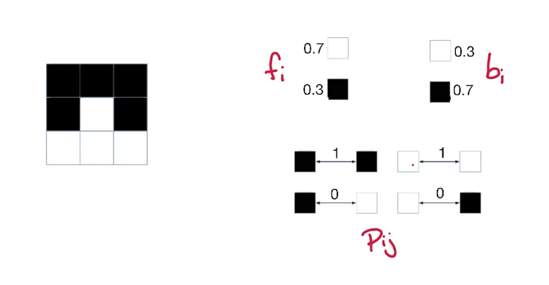
We will partition the image vertices, V, into F & B, just as before V = F ∪ B. Perhaps you can see where this is going? Clearly a pixel cannot belong to both F & B so this defines a cut. so we can compute the weight/capacity of this cut just as before.
w(F, B) = ∑i ∈ Ffi + ∑j ∈ Bbj − ∑i ∈ F, j ∈ BPij − ∑j ∈ F, i ∈ BPij
This defines a weight for an assignment of pixels to foreground and background. Now our image segmentation becomes just an optimization problem! Our goal is to maximize the weight w(F,B), we do this by looking over the possible partitions. Unfortunately though our min-cut algorithm requires an st-cut and returns a minimum. So a little extra work is required. Also recall that all the terms in a min-cut problems must be positive, so we need to convert the subtraction of the penalty into a positive term somehow.
So let's reformulate our problem just a bit
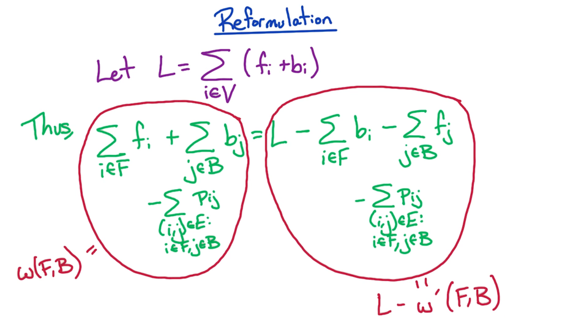
What this means is that
- for L = ∑i ∈ V(fi + bi)
- w(F, B) = ∑i ∈ Ffi + ∑j ∈ Bbj − ∑i ∈ F, j ∈ BPij
- this is the same as before
- w′(F, B) = ∑i ∈ Fbi + ∑j ∈ Bfj + ∑i ∈ F, j ∈ BPij
- this one takes some explanation
- sum of background likelihoods of pixels in the foreground
- plus sum of foreground likelihoods of pixels in the background
- plus sum of penalties
- Now we can relate w(F,B) and w'(F,B)
- w(F,B) = L - w'(F,B)
- thus maximizing w(F,B) is the result of minimizing w'(F,B)
Now we have a minimization problem, and all the terms of w'(F,B) are positive. Now we can use our max-flow solution using min st-cuts.
Let's review our new formulation:
Given an undirected graph G=(V,E) with weights:
- fi, bi ≥ 0, ∀i ∈ V
- $P_{ij} \ge 0, \forall (i,j) \in E $
Find the partition V = F ∪ B which minimizes w'(F,B)
What is still missing is our flow network, a directed graph. This is rather easy to add though. We will make all our edges bidirectional. Our original construction was to create a edge with no direction. Now for every edge e ∈ E we create E' composed of $\overset{\rightarrow}{ij} \in E$ and $\overset{\rightarrow}{ji} \in E$. each of these will also get the seperation penalty Pij
What we do next is add a source and sink vertices, s and t,
- foregrounds: fori ∈ V add edge s -> i of capacity fi
- similarly
- backgrounds: fori ∈ V add edge i -> t of capacity bi
Here's what our final graph looks like
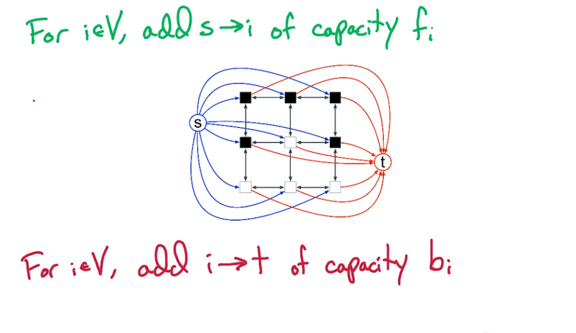
Now we have a flow network, and we have source & sink vertices. We can now run Ford-Fulkerson and get a Max-flow. Once we do we can compute the max-flow size to determine the min st-cut.
Let's take a moment to understand st-cuts in the context of this problem.
What is the capacity(F,B)? Recall that this is the sum of capacities
of edges going from F to B. What are these edges?
Suppose we define a partition like so
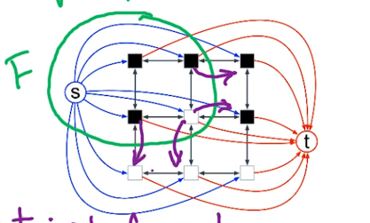
Which edges cross from F to B?
- for i ∈ F, get edges i -> t with cap bi, since all pixels got an edge to t
- for j ∈ B, get edges s -> j with cap fi, since the source s got an edge to all pixels
- we also get all the edges from pixels inside F to pixels inside B, but only those whose direction is outwards
- for (i, j) ∈ E : i ∈ F, j ∈ B get i -> j with capacity Pij
Summing all of these yields capacity(F,B) which is w'(F,B)
Let's summarize what we've done to arrive at a solution
- We began with the inputs G,f,b,p, where G was undirected
- our first step was define our flow network (G',c), where G' is directed with s,t in V
- we ran our max-flow to get $f^\cdot $
- which by the maxFlow-minCut theorem: size($f^\cdot $) = capacity of the min st-cut
- we demonstrated that capacity of the min st-cut = $\underset{F,B}{min} w'(F,B)$
- we also demonstrated that $\underset{F,B}{max} w(F,B)$ is achieved on the same partition as $\underset{F,B}{min} w'(F,B)$
In conclusion we've found the partition F,B that maximizes the equation w(F,B) = L - w'(F,B).
MF5 — Max-Flow Generalizations
MF5: Max-Flow Generalized
Demand Constraints
Input: Flow network, directed graph G(V,E), s, t ∈ V, c(e) > 0 for all e ∈ E. Additionally we are given the demand constraint d(e) ≥ 0 for e ∈ E Goal: To find a feasible flow, where feasible is defined as: for $e \in E, \\ d(e) \le f(e) \le c(e)$. Basically we need a valid flow, just as before, but we must also meet the demand expectations
This problem leads to two questions: first, is there a feasible flow?
Second, given the feasibility flow, what is the max flow?
Example
Let's re-use our example from previous sections. Numbers in green
represent the demand and those in red represents the capacity. Is there
a feasible flow for this example?
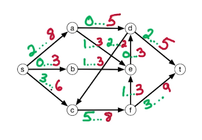
There is a feasible flow and it is tedious to determine
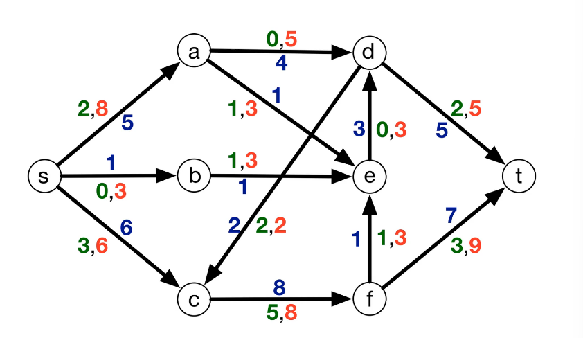
Algorithmically this is done by reducing the feasible flow problem to one of the max-flow. It's important to note that the feasible flow need NOT be a max flow, it just has to be feasible. Reduction implies that we will be able to make use of our max-flow algorithms without any alteration. We can modify the inputs of course, just as we did earlier to re-use DFS to find our strongly connected components. An added bonus to this approach is knowing the runtime of our algorithm, as well as their correctness.
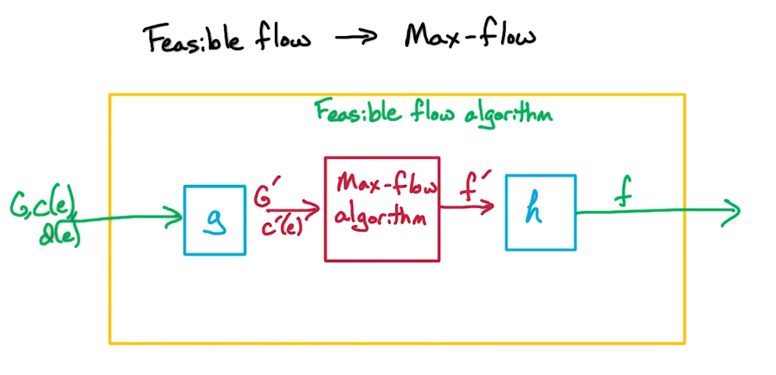
Above is a rough sketch of our approach
- We will use some algo g to construct G',c' to fit the inputs expected by our max-flow algo
- We will get back a flow f' which we must translate back, using some algo h, into our original inputs
- Our goal then is to find g & h
Part 1 Let's begin by looking at how to create G' and c', from the original inputs G,c, and d. Somehow we need to encode, or incorporate, the demand d into G and c to get G' and c'.
As is our usual approach to such problems let's sketch a simple graph
to help us visualize the situation. In the image below our simple graph
is on the left. The first number represents the demand, the second
number is the capacity.
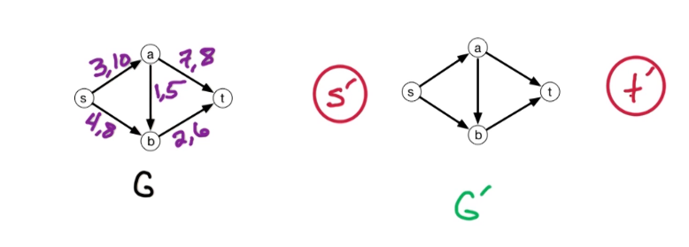
On the right side of the image we have a working prototype of G', we've taken the liberty of adding two new vertices s' and t'. It will become apprarent later why we've added these. For now it suffices to know these represent the start and end points of G'. Also notice that G' contains all the same vertices, and edges found in the original graph G.
What we will do is change the capacities so as to reflect the demands of the original problem. What we want to capture is that there is non-negative flow along an edge, f'(e) > 0, if and only if we can construct a flow in the original graph G that meets, or exceeds, the demand required (1). What we will also want is that the flow in G' satisfies this new capacity constraint, c' > f', iff the flow f satisfies the capacity constraint in the original network, c > f (2).
(1) $f'(e) \ge 0 \iff f(e) \ge d(e) $ (A flow of 0 in G' should
correspond to a flow of d in G)
(2) c′(e) ≥ f′(e) ⇔ c(e) ≥ f(e)
(3) $c'(e) = c(e) - d(e) $
In a manner these reflect a shifting of capacities, so we can formulate this as (3). Now consider how this reflects in the new graph. (sa) had a capacity of 10 and a demand of 3, t/f in G' we set (sa)' to capacity of 7. we've subtracted the demand of 3.
- ie ∀e ∈ E add e to G' with c'(e) = c(e) - d(e)
This results in the following Graph
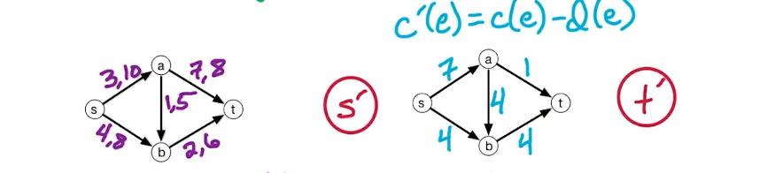
Our next step is to add some additional edges to G' to incorporate the start and end vertices, s' & t'. This is a bit trickier to understand. We want a valid flow in G' to correspond to a feasible flow in the original G. Suppose that the flow is 0 in G'. For example f'(sa)=f'(ab)=f'(at) = 0. Then what does this say about those edges in G? According to (1) above this means that each of these edges in G have a flow equal to their demand. But this could result in an invalid flow. In our example we would end up with a flow of 3 into a, and 7 out of a. This violates the conservation of flow and is t/f invalid. So we will use our new start and end vertices to remedy this situation. To do this we add an edge from s' to each vertice in G
- ie ∀v ∈ V add
s'->v to G' with c'(s',v) = d_into(v)
- Note that d_into(v) is the total demand for the vertex, it's not the demand of an edge.
- This gives us the ability to offset the flow, in order that we may conserve the flow
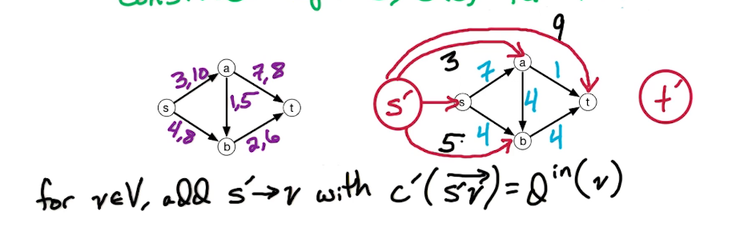
In a similar fashion we will also add an edge from each vertex to t'. Here we take the capacity to be the output demand of the vertex.
- ie ∀v ∈ V add v->t' to G' with c'(v,t') = d_outof(v)
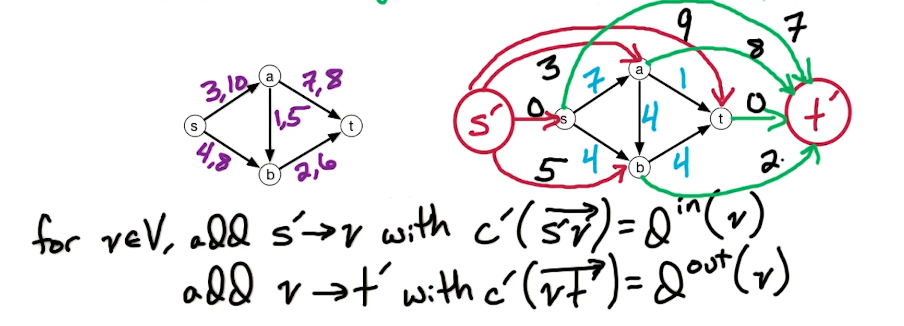
We're almost ready but there's a rather odd problem that is not so obvious. In G' s & t are no longer the start and end vertices. By adding a new start and end we've changed them into internal vertices, meaning they are now subject to the conservation of flow requirement. recall that s,t were excluded from this requirement because it wouldn't make sense before. A start vertex cannot have an inflow, nor can and end vertex have an outflow. But now they can. No worries, we will add a back edge from t to s to remedy this situation. Furthermore, there are no constraints on this edge so we will assign it a capacity of ∞
Now finally we have our final graph.
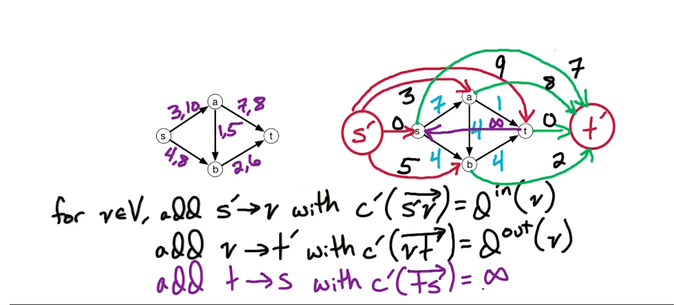
So what is the max-flow of this new graph G'? What we can see that is that it will be bounded by the total capacities out of s' and the total into t'. Let's consider this to see where it takes us
first observe that $D = \sum_{e \in E} d(e) = \sum_{v \in V} d\\into(v) = \sum_{v \in V} d\\outof(v)$
- summing the demand along each edge is the same as summing the demand into a vertex, or summing out of each vertex
- consequently
- $c'_{outof}(s') = \sum_{v \in V} d\\into(v) = D$
- $c'_{into}(t') = \sum_{v \in V} d\\outof(v) = D$
This tells us quite a bit about the size of the flow in G', in fact for flow f' in G', size(f') ≤ D. This is what is called saturating: F' is saturating if size(f') = D. And this means that the flow f' is of max size. This leads us to our next lemma.
Feasible iff Saturating
LEMMA G has a feasible flow ⇔ G' has a saturating flow
This provides us with the direction to solving our original problem, which is to find a feasible max flow. We will create our G' as outlined above, we run max-flow on G', then we check if the the size of the max-flow is equal to D or not. if it is equal then it is saturating and by the lemma G has a feasible flow. In fact we will take f', aka the saturating flow, and construct a feasible flow for the original G from it.
Proof of Lemma
Part 1: saturating ⟹
feasible
We will proceed by constructing a feasible flow f in G from the saturating flow f' in G'. recall that in the construction of G' we shifted the capacities of each edge by their demand d(e). So let's apply a similar logic to the flow. ie f'(e) = f(e) - d(e). Now we move the demand to the left side to get f'(e) + d(e) = f(e).
First let's check to see if f is feasible. It's trivial to see that if f′ ≥ 0 then f ≥ d, t/f f is feasible. This proves feasiblility but let's consider the 2nd condition as well: c ≥ f. Recall that this implies that
- f(e) ≤ c′(e) + d(e)
- f(e) ≤ (c(e) − d(e)) + d(e) sub the original eq of c'
- f(e) ≤ c(e) which is what we would expect
Not all that's left is to check that all inflows are equal to the outflows, ie the validity of the flow! To do this we need to prove that for any v ∈ V-{s,t}, fin(v) = fout(v). We know that fin′(v) = fout′(v) holds as it's the output of a max-flow algo. Let's look at fin′(v).
$\begin{split} f'_{in}(v) & = f'( \overset{\rightarrow}{s'v}) + \sum_{u \in V} f'(u-\>v) \\ & = d_{in}(v) + \sum_{u \in V} (f(u-\>v) - d(u-\>v)) & \text{ rewrite f' in terms of f } \\ & = \sum_{u \in V} f(u-\>v) & \text{ cancel out the demands as they both represent into v } \\ & = f_{in}(v) & \text{ summation of flows into v is just the inflow f\\in } \end{split}$
What this tells us is that the flow into v in G' is the same as the flow into v in G. A similar arguement can be made for the outflow of v in both G' and G. Together they give us the original statement that we wanted to prove, namely fin(v) = fout(v). t/f f is a valid flow as required.
In addition to proving the implication we've also shown how to construct the feasible flow
- Simply set f(e) = f'(e) + d(e)
Now let's move to proving the inverse implication
Part 2: feasible ⟹
saturating
In a manner similar to previous we will assume a feasible flow f in G,
and use it to construct a saturating flow f' in G'.
We begin by defining the flow f'(e) as a shifting of the original flow f(e) by d(e) units,
- for the original edges
- for all e ∈ E(the original G), let f'(e) = f(e) - d(e)
- but we also added edges that should be taken into account
- for v ∈ V
- let f'(s'->v) = dinto(v) in order for it to be fully saturated
- let f'(v->t') = doutof(v)
- let f'(t'->s') = size(f)
Now we have constructed flow so we need only show that it is saturated and is a valid flow.
Since f is assumed to be feasible we know that
- (1) f(e) ≥ d(e) ⟹ f'(e) ≥ 0
- (2) f(e) ≤ c(e) ⟹ f'(e) ≤ c(e) - d(e) = c'(e)
Now we check validity, fin′(v) = fout′(v).
We know that fin(v) = fout(v),
Let's see if/how can use this. Recall that fin′(v)
is the total demand from s' into v, dinto(v).
Plus the sum of all the internal vertices in V, which we can write in
terms of the original G as ∑u ∈ V(f(uv) − d(uv))
- ie fin′(v) = dinto(v) + ∑u ∈ V(f(uv) − d(uv))
- we cancel out the demand terms as they are the same and will offset each other, leaving us with
- fin′(v) = ∑u ∈ Vf(uv) = fin(v)
- similarly we can show that
- fout′(v) = ∑u ∈ Vf(vu) = fout(v)
Putting these together yields fin′(v) = fout′(v) which is our goal. hence f' is a valid flow
We've now proven that G has a feasible flow if and only if our constructed G' has a saturating flow.
So to find a feasible flow in G
- we construct G' as described above
- we run a max-flow algo on G' (either edmonds-karp or ford-fulkerson will work so pick your fav)
- check to see if the max-flow returned is equal to D, where D is the total capacity
- if it is equal to D
- then it is a saturating flow
- hence it can be transformed back to a feasible flow f for graph G.
The only thing that remains is to determine how to find a feasible flow that is also a max flow. Recall how our max-flow algorithms worked. Both FF and EK start with a zero-flow, build a residual graph, and iteratively find augmenting st-paths and increment along such paths, and rebuild the residual graph. They both terminate when they can no longer find augmenting st-paths. This guarantees that the flow constructed is a max-flow. We will take a similar pattern/approach to the max feasible flow.
Given feasible flow f
- Build a residual graph Gf (we will try to augment this)
- find st-path
- if found then augment and repeat
- else flow is at a max
However, this residual graph is not exactly the same as before.
Given a flow f over G
$c_f(\overset{\rightarrow}{vw}) =
\begin{cases} C(\overset{\rightarrow}{vw}) -
f(\overset{\rightarrow}{vw}) & if (\overset{\rightarrow}{vw}) \in E
\\ f(\overset{\rightarrow}{wv}) - d(\overset{\rightarrow}{wv}) & if
(\overset{\rightarrow}{wv}) \in E \\ 0 & otherwise \\
\end{cases}$
- Case 1 represents forward edges, thus this is the left over capacity from the flow
- Case 2 represents backwards edges, this is capped by the demand
constraint, it cannot decrease less than that
- basically back edges in this type of residual graph are limited to how much the flow exceeds the demands
- where as in the previous cases the only limit was 0
- Case 3 all edges not in 1 or 2
Example
Here is our example from earlier, along with it's graph G'. Your goal is to specify the capacities along each edge in G'
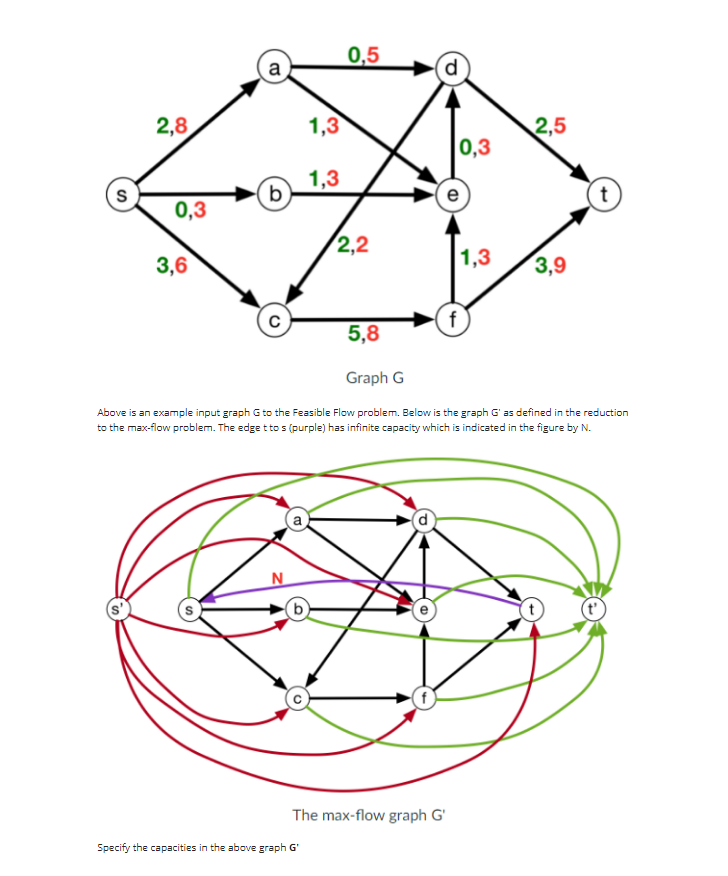
Solutions are in the appendix
GR4 — Markov Chains & PageRank
GR4: Markov Chains & PageRank
This module connects graph theory, linear algebra, and probability. PageRank uses all three to define the "importance" of a webpage. The key insight: importance = stationary distribution of a random walk.
1. What Is a Markov Chain?
A Markov chain is a random process that moves between states over discrete time steps, where the next state depends only on the current state (not the history).
Formally:
- N states: {1, 2, ..., N}
- Transition matrix P (N × N): P(i, j) = Pr(go from state i to state j)
Two key constraints on P:
- P(i, j) ∈ [0, 1] for all i, j (probabilities)
- Each row sums to 1: Σⱼ P(i, j) = 1 (from any state, you go somewhere)
A matrix with non-negative entries where every row sums to 1 is called a stochastic matrix.
Example: The CS 6210 Student
graph LR
K["Kishore<br/>(lecture)"] -->|0.5| K
K -->|0.5| E["Check<br/>Email"]
E -->|0.2| K
E -->|0.5| S["StarCraft"]
E -->|0.3| Z["Sleep"]
S -->|0.3| E
S -->|0.7| S
Z -->|0.7| K
Z -->|0.3| ZNote. Self-loops are allowed (and common) in Markov chains!
Transition matrix:
Kishore Email StarCraft Sleep
Kishore [ 0.5 0.5 0 0 ]
Email [ 0.2 0 0.5 0.3 ]
StarCft [ 0 0.3 0.7 0 ]
Sleep [ 0.7 0 0 0.3 ]Each row sums to 1.
2. k-Step Transitions: Powers of P
One step: P(i, j) = probability of going from i to j in 1 step.
Two steps: P²(i, j) = probability of going from i to j in exactly 2 steps.
k steps: Pᵏ(i, j) = probability of going from i to j in exactly k steps.
Intuition: Matrix multiplication naturally sums over all possible intermediate states — exactly what we need for multi-step probabilities.
Example: P² for the 6210 chain
P² = [ 0.35 0.25 0.25 0.15 ]
[ 0.31 0.25 0.35 0.09 ]
[ 0.06 0.21 0.64 0.09 ]
[ 0.56 0.15 0 0.09 ] (approximate)Verification: P²(2, 1) = Pr(Email → Kishore in 2 steps) = (Email → Kishore → Kishore) + (Email → Sleep → Kishore) = (0.2)(0.5) + (0.3)(0.7) = 0.10 + 0.21 = 0.31
3. What Happens for Large k?
Something remarkable: as k → ∞, the rows of Pᵏ all converge to the same vector.
For our example, P²⁰ ≈
[ 0.292 0.188 0.406 0.104 ]
[ 0.292 0.188 0.406 0.104 ]
[ 0.292 0.188 0.406 0.104 ]
[ 0.292 0.188 0.406 0.104 ]Every row is approximately π = [0.292, 0.188, 0.406, 0.104].
What this means: No matter where you start, after enough time steps, the probability of being in each state converges to π. You'll spend ~29.2% of your time listening to Kishore, ~40.6% playing StarCraft, etc. — regardless of starting state.
This π is the stationary distribution.
4. Stationary Distribution
Definition: A stationary distribution π is a row vector such that πP = π.
In other words: if you're in distribution π and take one step, you stay in π. It's a fixed point of the random walk.
Linear Algebra Perspective
πP = π means π is a left eigenvector of P with eigenvalue 1.
More generally, if μ₀ is your initial distribution (a row vector), then:
- After 1 step: μ₁ = μ₀ · P
- After 2 steps: μ₂ = μ₀ · P²
- After k steps: μₖ = μ₀ · Pᵏ
As k → ∞, μₖ → π regardless of μ₀ (under the right conditions).
Key Questions
- Does every Markov chain have a stationary distribution?
- Is it unique?
- Do we always converge to it?
The answer to all three is yes — if the chain is ergodic.
5. Ergodic Markov Chains
A Markov chain is ergodic if it's both:
(a) Irreducible (= Strongly Connected)
The underlying directed graph is one strongly connected component — you can get from any state to any other state.
Pitfall: If there are multiple SCCs, the starting state determines which states you can reach. No unique stationary distribution.
graph LR
subgraph SCC1
A --> B --> A
end
subgraph SCC2
C --> D --> C
endThis is NOT irreducible — starting in SCC1, you never reach SCC2.
Fix: Make the graph fully connected (positive probability between every pair).
(b) Aperiodic
The chain has no periodic structure. A chain is periodic if some states can only be revisited at regular intervals.
Pitfall: Bipartite graphs have period 2 — you alternate sides. At odd times you're on one side, even times on the other.
graph LR
L1 --> R1
L1 --> R2
R1 --> L1
R1 --> L2
R2 --> L2
L2 --> R1If you start on the left, at every even time you're on the left, every odd time on the right. Starting state matters!
Fix: Add self-loops (P(i, i) > 0 for all i). Even a tiny self-loop probability destroys periodicity.
The Ergodic Theorem
Theorem: If a Markov chain is ergodic (irreducible + aperiodic), then:
- There exists a unique stationary distribution π
- For any starting distribution μ₀, μ₀ · Pᵏ → π as k → ∞
- Every row of Pᵏ converges to π
Sufficient condition (easy to check): If P(i, j) > 0 for ALL i, j (every entry positive), then the chain is ergodic.
When Can We Compute π?
| Case | π |
|---|---|
| P is symmetric: P(i,j) = P(j,i) | π is uniform: π(i) = 1/N for all i |
| P is reversible: π(i)P(i,j) = π(j)P(j,i) | Can solve for π using detailed balance |
| General | No closed form — compute via Pᵏ for large k |
6. PageRank — Motivation
Problem: The web is a directed graph (vertices = pages, edges = hyperlinks). When someone searches for "Markov chains," many pages match. How do you rank them by importance?
Idea 1: Count incoming links
π(x) = |in(x)| (in-degree)
Problem: A link from CNN is worth more than a link from some random page. All links shouldn't count equally.
Idea 2: Scale by number of outgoing links
π(x) = Σ_{y ∈ in(x)} 1/|out(y)|
If page y has 1000 links, each one is worth 1/1000. If it has 5 links, each is worth 1/5.
Problem: A link from CNN should be worth more than a link from my kid's homepage, even if they have the same number of outgoing links. The importance of the source matters.
Idea 3: Weight by source importance (recursive!)
$$\pi(x) = \sum_{y \in in(x)} \frac{\pi(y)}{|out(y)|}$$
A citation from page y is worth π(y)/|out(y)| — proportional to y's importance, divided among its outgoing links.
This is a recursive definition — π appears on both sides. Is it well-defined? Is there a unique solution?
Intuition: This is exactly the equation πP = π for a random walk on the webgraph! PageRank = stationary distribution.
7. The Random Surfer Model
Imagine a "random surfer" who:
- Starts at any webpage
- At each step, follows a random outgoing hyperlink
This defines a Markov chain with transition matrix:
$$P(y, x) = \begin{cases} 1/|out(y)| & \text{if } y \to x \text{ is a hyperlink} \\ 0 & \text{otherwise} \end{cases}$$
The stationary distribution of this chain satisfies exactly the PageRank equation from above!
But there are problems:
- The webgraph has multiple SCCs → not irreducible
- Parts may be bipartite → periodic
- Some pages are sink nodes (no outgoing links) → transition undefined
8. Fixing the Problems — The Damping Parameter
To ensure ergodicity, we modify the random walk with a damping parameter α ∈ (0, 1):
At each step:
- With probability α: follow a random outgoing hyperlink
- With probability 1 - α: jump to a random page uniformly from ALL pages
This is the random surfer with a "random button." Google reportedly uses α ≈ 0.85.
The Modified Transition Matrix
For N total webpages:
$$P'(y, x) = \begin{cases} \alpha \cdot \frac{1}{|out(y)|} + (1-\alpha) \cdot \frac{1}{N} & \text{if } y \to x \in E \\ (1-\alpha) \cdot \frac{1}{N} & \text{if } y \to x \notin E \end{cases}$$
Since α < 1, every entry P'(y, x) > 0. The graph is fully connected → irreducible AND aperiodic → ergodic.
Therefore: a unique π exists, and it's the PageRank vector.
9. Handling Sink Nodes
A sink node x has no outgoing links: |out(x)| = 0.
The transition matrix is undefined for row x. Several fixes:
| Approach | How | Downside |
|---|---|---|
| Self-loop | With prob α, stay at x | Artificially boosts x's rank |
| Remove sinks | Recursively delete | Shrinks graph, some pages unranked |
| Random jump | With prob 1, jump to random page (set α=0 for sinks) | Most natural; apparently what Google does |
With the random jump approach: for sink node x, set P'(x, j) = 1/N for all j.
10. Computing PageRank in Practice
Method: Power iteration — repeatedly multiply by P.
FindPageRank(P', μ₀):
Input: Transition matrix P', initial distribution μ₀
Output: Approximate stationary distribution π
μ = μ₀
repeat until convergence:
μ_new = μ · P'
if ||μ_new - μ|| < ε: return μ_new
μ = μ_newKey considerations:
- P' is N × N where N = number of webpages (billions!). O(N²) is too expensive.
- But P' is sparse — the original webgraph has O(N) edges (constant out-degree on average)
- Matrix-vector multiplication μ · P' takes O(m) time where m = number of edges
- Convergence is fast because the random jump mixes things quickly
- In practice, use last week's π as the starting μ₀ for faster convergence
11. Putting It All Together
graph TD
A["Web Graph G<br/>(pages + hyperlinks)"] --> B["Build transition matrix P<br/>P(y,x) = 1/|out(y)|"]
B --> C["Add damping: P' = αP + (1-α)·1/N<br/>(handles SCCs, periodicity, sinks)"]
C --> D["Power iteration: μ·P'^k → π"]
D --> E["π = PageRank vector<br/>π(x) = importance of page x"]| Component | Role |
|---|---|
| Random walk on webgraph | Natural importance measure |
| Damping parameter α | Ensures ergodicity (unique π) |
| Stationary distribution π | = PageRank (importance) |
| πP = π | Eigenvector equation |
| Power iteration | Efficient computation |
12. Summary
| Concept | Key Point |
|---|---|
| Markov chain | Random walk defined by stochastic matrix P |
| Pᵏ(i,j) | Probability of i → j in k steps |
| Stationary distribution | π such that πP = π; left eigenvector with eigenvalue 1 |
| Ergodic | Irreducible (1 SCC) + aperiodic (self-loops); guarantees unique π |
| PageRank | π(x) = Σ π(y)/ |
| Random surfer | With prob α follow link, prob 1-α jump randomly |
| α (damping) | ≈ 0.85; ensures full connectivity; balances fidelity vs convergence |
| Sink nodes | Set α = 0 (always random jump) |
| Computing π | Power iteration μ · P'^k; O(m) per iteration |
Exam Tip: Know the connection between the three perspectives: (1) citation counting, (2) random walks/Markov chains, (3) eigenvectors. They all give the same equation.
Common Pitfall: The webgraph is NOT ergodic by itself (multiple SCCs, sinks, possible bipartiteness). The damping parameter is essential — without it, PageRank is not well-defined.
DPV chapter exercises
DPV chapter exercises (exact, from the textbook)
Exact end-of-chapter exercises, parsed from the DPV chapter PDFs.
DPV Ch 2 — Divide And Conquer — open exercises · chapter PDF
DPV Ch 1 — Algorithms With Numbers — open exercises · chapter PDF
Agent hint
Route by sub-topic: FFT→11A (eval at roots of unity, O(nlog n)), flow apps→11B (reduce to max-flow), modular/RSA→11C (fast mod-exp + factoring security), Bloom→11D (no false negatives). Quiz 8 is cumulative across the whole course.